Slide figures
Sixteen figures for the semantic-modelling section of the CHNT31 talk. The classes and properties behind them, the CRM coverage and a query page are in the documentation.
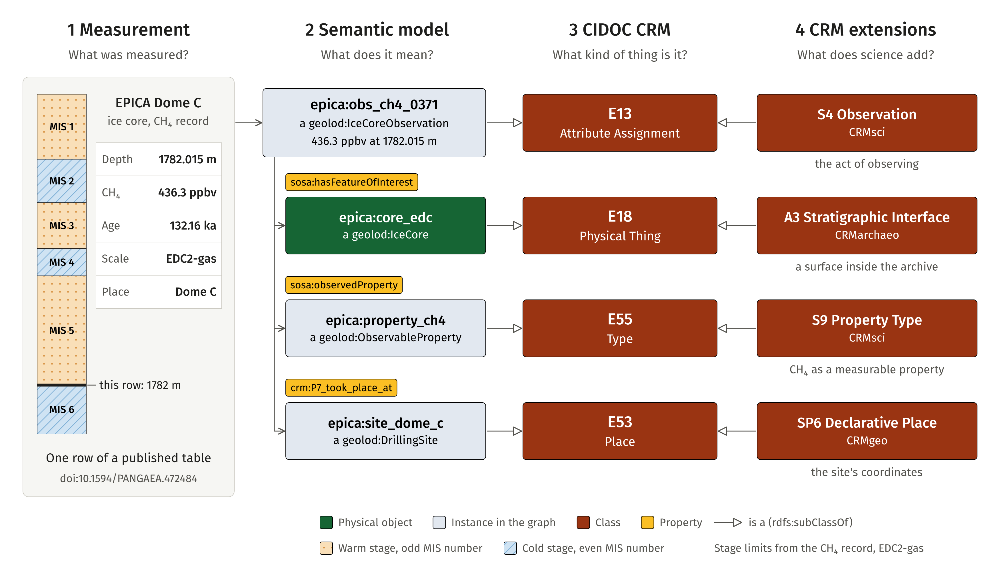
1From one table row to CIDOC CRM and its extensions.
Data: EPICA Dome C, Spahni & Stocker 2006, doi:10.1594/PANGAEA.472484; figure CC BY 4.0.


2Extensions specialise CIDOC CRM classes rather than replace them.
Classes: geo-lod, CIDOC CRM, CRMsci 2.0, CRMarchaeo 1.4.8; figure CC BY 4.0.


3One stage boundary, five chronologies, 48 m apart in the same core.
Data: EPICA Dome C via geo-lod; stage boundary after Railsback et al. 2015; figure CC BY 4.0.

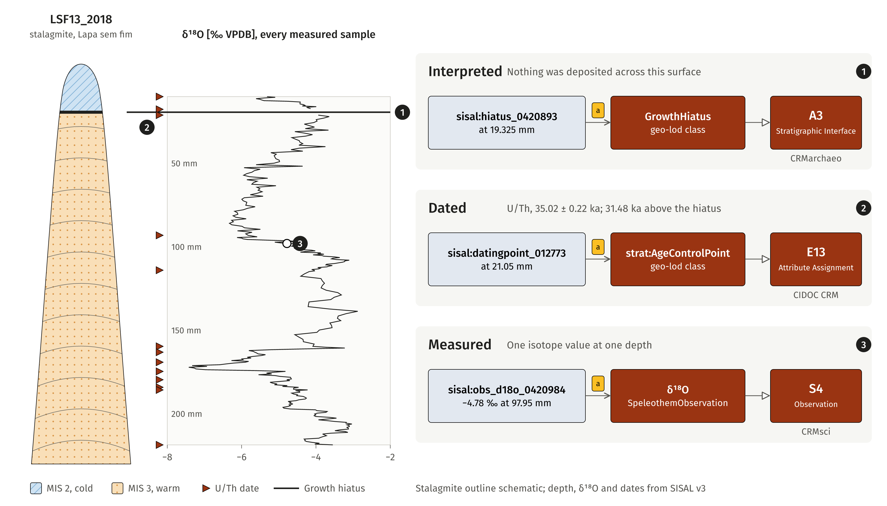
4Measured, dated and interpreted statements about one stalagmite.
Data: SISAL v3, LSF13_2018; outline schematic; figure CC BY 4.0.


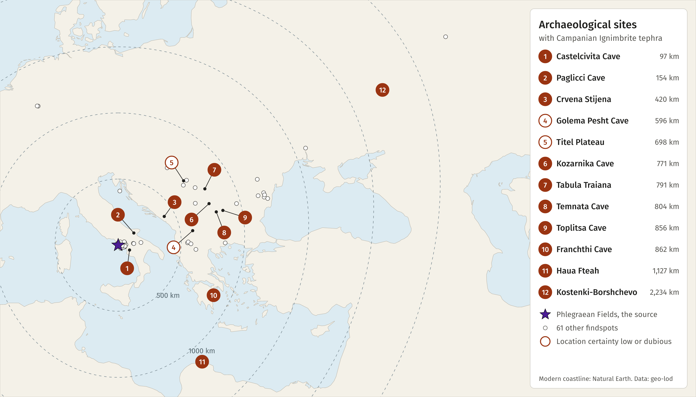
5Archaeological sites with Campanian Ignimbrite tephra, up to 2,234 km from the source.
Data: geo-lod CI findspots; coastline Natural Earth; figure CC BY 4.0.


6The graph records where; the measurement shows what.
Data: Schenk et al. 2024, Quaternary 7, 17; dashed nodes are planned; figure CC BY 4.0.

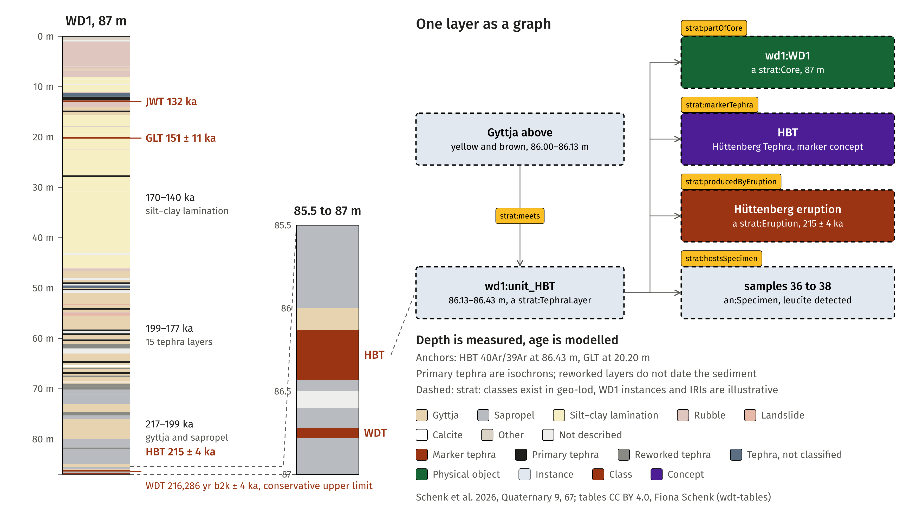
7Core WD1: depth is measured, age is modelled.
Data: Schenk et al. 2026, Quaternary 9, 67; tables CC BY 4.0, Fiona Schenk; dashed nodes are illustrative.


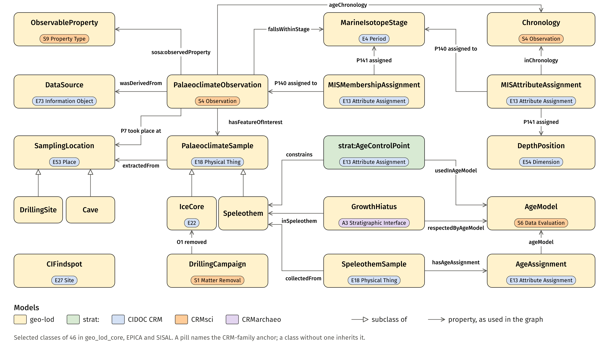
8Classes and properties of the geo-lod model.
Selected classes; each anchored in the CIDOC CRM family; figure CC BY 4.0.


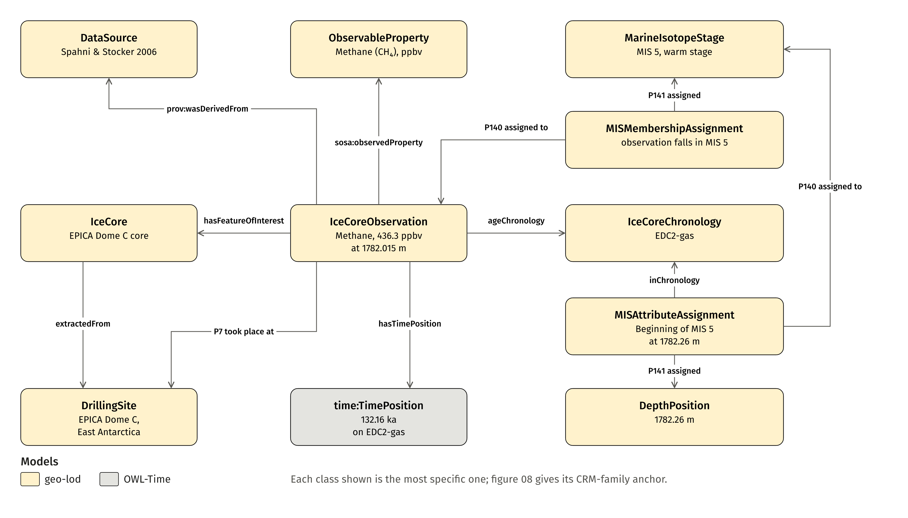
9One methane measurement as a semantic representation.
Data: EPICA Dome C, Spahni & Stocker 2006, doi:10.1594/PANGAEA.472484; figure CC BY 4.0.


10The strat module: stratigraphy of a core.
Ontology: strat.ttl; dashed anchors are planned; figure CC BY 4.0.

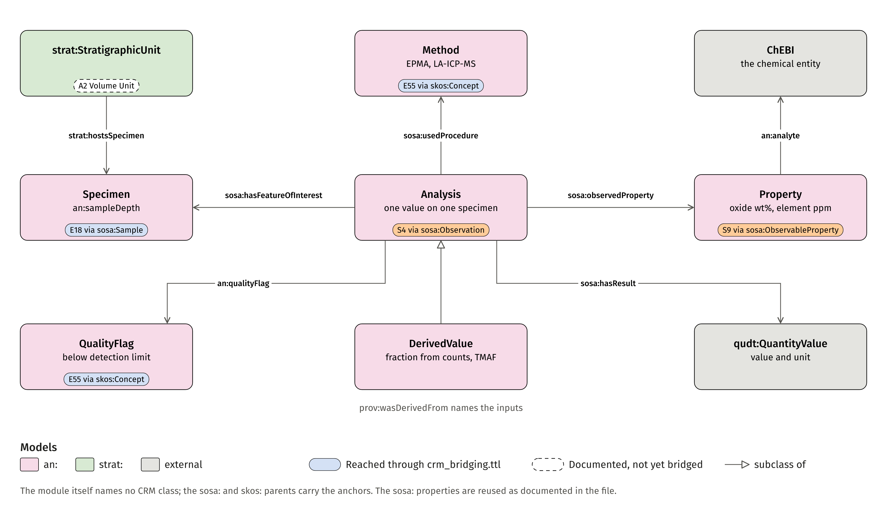
11The an module: one analysis of one specimen.
Ontology: analysis_core.ttl; anchors through crm_bridging.ttl; figure CC BY 4.0.


12Three modules, one CRM family.
Ontology modules of geo-lod; figure CC BY 4.0.

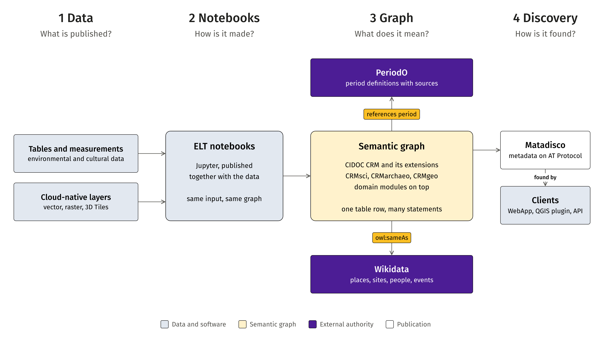
13The semantic layer of SpaceTimeArc: from published data to discovery.
General architecture; geo-lod is its demonstrator; figure CC BY 4.0.


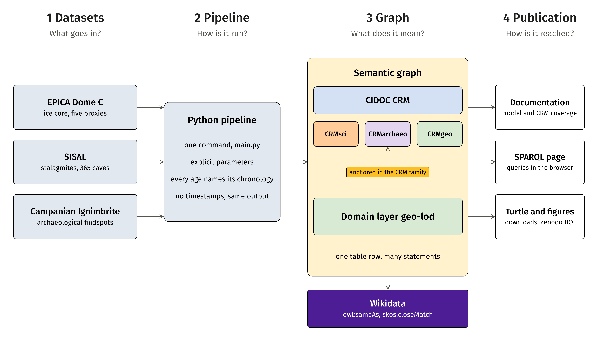
14geo-lod in one picture: datasets, one reproducible pipeline, a CRM-based graph, publication.
Overview of the demonstrator; figure CC BY 4.0.


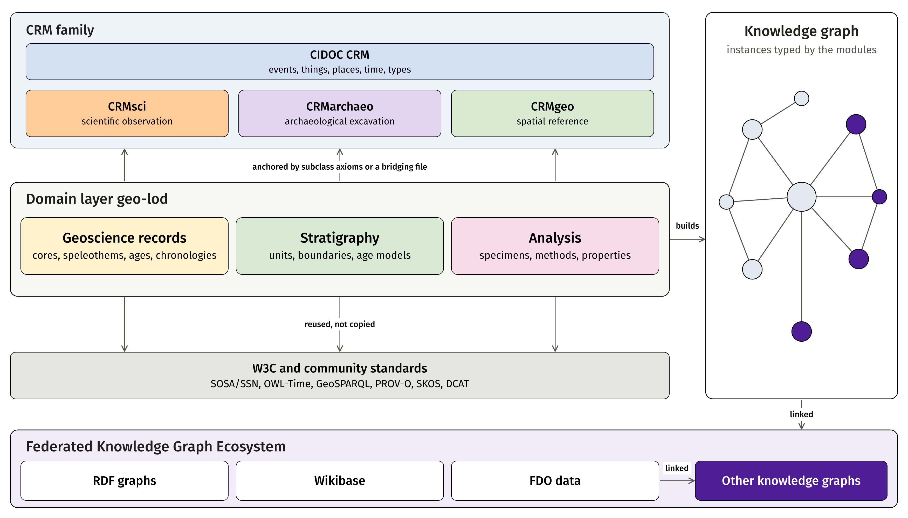
15Domain modules anchored in the CIDOC CRM family and reusing W3C standards.
Simplified from figure 12; figure CC BY 4.0.


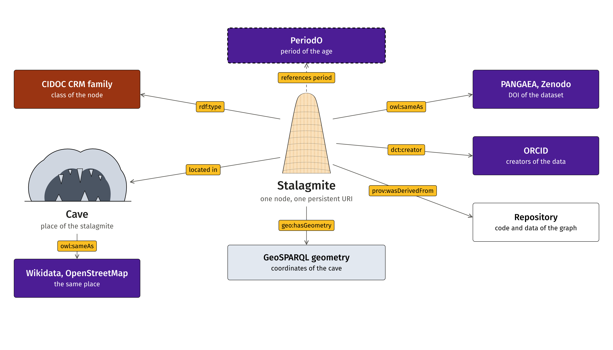
16Where the graph opens up: a stalagmite as a node and what it is linked to.
Schematic; the links are those used in geo-lod, the PeriodO link is planned; figure CC BY 4.0.